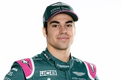

Lance Stroll, nacido como Lance Strulovitch, es un piloto de automovilismo canadiense.Ganó los campeonatos de Fórmula 4 Italiana en 2015 y Fórmula 3 Europea en 2016. Disputó las temporadas 2017 y 2018 con Williams en Fórmula 1, en 2019 y 2020 fue piloto de Racing Point.

Incios
Inició su carrera en el karting en 2008, dos años después fue contratado por el programa de desarrollo de la Scuderia Ferrari. Dio el salto a las fórmulas promocionales en 2014, debutando en el Campeonato de Italia de Fórmula 4 en 2014, donde se consagró campeón con 10 victorias.2 Al año siguiente disputó el Toyota Racing Series de Nueva Zelanda saliendo campeón, y disputó su primera temporada en el Campeonato Europeo de Fórmula 3 de la FIA, donde terminó quinto.2 Después de la temporada Lance dejó el programa de desarrollo de Ferrari para sumarse al equipo Williams como piloto tester.3
Empezó la temporada 2016 haciendo su debut en sport prototipos en las 24 Horas de Daytona con un Riley-Ford de Chip Ganassi; junto con sus compañeros de butaca Alexander Wurz, Andy Priaulx y Brendon Hartley lograron el quinto puesto general. Luego el canadiense logró el título de Fórmula 3 Europea con 14 victorias
Escuderia
Aston Martin
Dorsal
18
Fecha de nacimiento
29 de octubre de 1998 (edad 25 años), Montreal, Canadá
Lugar de residencia
Montreal, Canadá
Aficciones del piloto
Karting
Golf
Ciclismo
Hockey
Equipos en los que ha competido el piloto
Williams
Racing Point
Aston Martin
Conceptos relacionados con la Formula 1
Efecto Suelo
Consiste en crear bajas presiones de aire en la parte baja del monoplaza que está más cerca del asfalto, de tal modo que esto empuje al coche hacia la pista.
El concepto parte del efecto Bernoulli, por el cual si se acelera un fluido o gas en movimiento su presión cae.
DRS
Las siglas en inglés suponen Drag Reduction System y esto es un sistema hidráulico colocado en los alerones traseros de los monoplazas.
El objetivo es reducir la resistencia del aire para así aumentar la eficiencia aerodinámica y la velocidad punta en rectas.
Fondo plano
Esta es la parte que va a menor altura del monoplaza y el objetivo de esta es reducir la cantidad de gases que pasan por ahí, así como reconducirlos hacia zonas concretas.
La finalidad del fondo plano es poder aumentar la carga aerodinámica, siendo esta la parte más eficiente de todo el monoplaza.
Difusor
Se trata de una pieza aerodinámica colocada en la parte posterior del monoplaza, justo en el final del fondo plano y que puede adoptar diferentes formas dependiendo del concepto de cada equipo.
El objetivo del difusor es desplazar los gases que pasan por el fondo plano para aumentar la carga aerodinámica y aumentar el efecto suelo.
Push rod
Esto es un tipo de suspensión que se caracteriza por tener una barra de compresión, en lugar de tracción como en las suspensiones Pull rod.
En las suspensiones Push rod el brazo que une las ruedas al monoplaza surge de la parte superior y va hasta la inferior, conectando así con el coche.